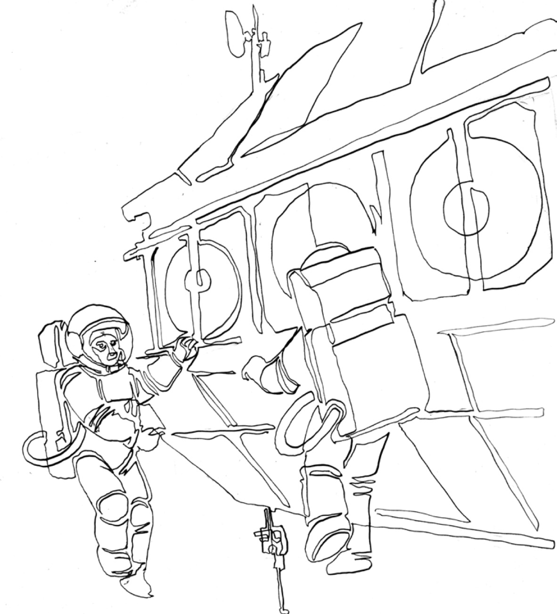

När vi samlades för att designa lärande – på riktigt
I det här projektet har vi alltså genomfört ett flertal workshops och större hackathons där deltagare från olika verksamheter, roller, bakgrunder och erfarenheter har fått vara med och reflektera kring vad som egentligen väcker drivkraften att lära – och hur man kan designa för det. Det har inte handlat om att hitta ett facit, utan om att lyfta fram den mångfald av tankar, behov och erfarenheter som redan finns i arbetslivet. Genom att bjuda in till gemensamt utforskande i öppna format, har vi kunnat skapa insikter som är både rotade i verkligheten och inspirerande för framtiden.
I vissa sammanhang har vi arbetat i mindre reflektionsgrupper med stöd av framtagna frågor. I andra har många deltagare fått ta del av varandras berättelser, skissa på lösningar, mappa samband eller generera idéer tillsammans i digitala verktyg. Oavsett format har fokus legat på att se lärande som något som sker i relation – inte som en enskild insats utan som en del av arbetsvardagen, kulturen och det kollektiva medvetandet i en organisation.
Genom att låta dessa samtal fångas upp, analyseras och struktureras – bland annat med stöd av AI-genererade sammanställningar – har vi kunnat identifiera mönster som återkommer i olika kontexter. Men minst lika viktigt är processen i sig, att få tänka högt tillsammans, testa perspektiv, pröva språk och bli påmind om sin egen roll i att forma en lärande miljö.
I en tid där kompetensutveckling ofta presenteras som individens ansvar, vill vi med detta arbete visa kraften i gemensamt utforskande reflektion. När människor ges möjlighet att prata om vad som faktiskt väcker motivation, nyfikenhet, trygghet och minnesaktivering i deras vardag – då växer inte bara nya idéer fram. Utan även en ny förståelse för vad lärande är, kan vara, och behöver bli när idag omvärlden på olika sätt kräver det av oss. Här berättar vi vad som hände, vilka idéer som föddes, och vad vi lärde oss om lärande – genom att faktiskt göra det ihop.
Hackathonet “Lära att Lära” – och varför det spelade roll
Hackathonet “Lära att Lära” som hölls den 10 juni 2024 på The Park i Stockholm, var ett av de lite större evenemang som vårt projekt bjöd in till. Det var en dag fylld av samarbete, kreativitet och gemensam reflektion. Deltagarna var personer som i sina verksamheter är med och skapar, designar eller fattar beslut om lärinsatser - inom arbetslivet, organisationsutveckling eller inom området pedagogisk utveckling. Målet var inte bara att samla idéer, utan att gemensamt utforska hur lärande kan utformas för att stärka drivkrafter som nyfikenhet, framplockning, inre motivation och psykologisk trygghet.
Här är några delar av vad som skedde, hur processen var utformad, och vad vi såg i deltagarnas engagemang:
Processen – hur det gick till
Hackathonets fem delar. Välj en del för att läsa hur det gick till.
Öppning och gemensam inramning
Hackathonet inleddes med presentation av forskningsprojektet Lära att Lära, vilka drivkrafter som skulle vara i fokus och varför dessa är centrala. Detta skapade ett gemensamt vokabulär och en förståelse för varför deltagarnas insikter var efterfrågade.
Grupprundor och kreativa övningar
Deltagarna delades upp i mindre grupper där de fick diskutera och reflektera över varje drivkraft. Övningar kunde vara att identifiera utmaningar i sina egna organisationer, att skissa designidéer för lärinsatser, eller att brainstorma hur de skulle vilja se lärande organiseras för att passa olika typer av personer.
Idégenerering och prototyper
I grupperna togs konkreta idéer fram, små prototyper, skisser eller koncept för lärinsatser. Det kunde handla om interna workshops, digitala mikromoduler, peer-coaching-system eller nya mötesformer för reflektionsarbete.
Presentation och delande
Mot slutet fick grupperna presentera sina idéer för alla närvarande. Dessa presentationer fungerade både som reflektion för grupperna själva – att se vad andra kommit fram till – och som inspiration för de andra deltagarna att ta idéer vidare.
Samling av insikter
Eftersom materialet från hackathonet kompletterades med tidigare workshopdata och senare i analyser med AI, knöts idéerna till mönster: vilka förslag kom upp ofta, vilka hinder pekade deltagarna på, var fanns variation i behov etc..
Vad vi såg – mönster i deltagarnas upplevelser och idéer under hackathonet
Här samlar vi några återkommande teman och reflektioner från vad deltagarna sa och gjorde under hackathonet:
Många idéer knöt lärandet till verkliga praktiska situationer - alltså inte isolerade kurser utan uppgifter som är relevanta direkt i arbetet (problem som behöver lösas, kundbehov, interna förbättringar osv).
Vi diskuterade en hel del kring hur lärande ofta är för “fastlagt”, med för lite flexibilitet för olika arbetssätt, olika inlärningsstilar och erfarenhetsnivåer. Många deltagare uttryckte en vilja att skapa utrymme för reflektion och återkoppling, så att man inte bara har plats för “utbildning – genomförande – avslut”. Reella lärprocesser med intervall för reflektion, delning och justering efterfrågades.
Insikten att trygghet och kultur spelar stor roll var tongivande. Det måste finnas tillit i lärandesituationer, man behöver våga tillstå att man inte vet och att känna att misstag är tillåtna, för att lärande ska fungera väl. Många tog också med sig behovet av att locka eller plocka fram kunskap som redan finns hos medarbetare. Att använda erfarenheter, tysta kunskaper och informella lärdomar, snarare än att bara tillföra ny kunskap ovanifrån.
Varför det är viktigt att involvera många i en sådan process
Att skapa och utforma lärandedesign, inte som en top-down-operation, utan som något där många röster hörs - gör stor skillnad, särskilt i arbetslivet. Här är några av våra argument och insikter för varför hackathons/workshops och bred involvering är centrala (läs även mer i intervjun med Ann Molin).
Bredd av perspektiv
Medarbetare har ofta väldigt olika erfarenheter, förväntningar och hinder. Genom att samla många olika yrkesroller och bakgrunder framträder variation. Vad som fungerar för en person kanske inte fungerar för en annan. Här blir lösningen att designa upplägg som är mer inkluderande.
Ägarskap, agens och motivation
När personer får vara med och forma lärandet – inte bara får det serverat – ökar känslan att det är “vårt eller mitt” lärande, att det är meningsfullt.
Det stärker inre motivation och viljan att faktiskt använda det som kommer fram.
Identifiering av praktiska hinder och möjligheter
I många samtal under vårt arbete framkom att hinder för lärande i vardagen inte bara är individuella eller abstrakta (som att individer exempelvis inte skulle vilja lära), utan handlar om saker som tid, resurser, stöd från kollegor eller chefer, flexibilitet och miljö. Dessa faktorer har stor påverkan, vilket syns även mycket tydligt i beteendeforskningen. Lärandet är alltid kontextberoende. Många av idéerna som kom fram under våra olika aktiviteter, handlade just om hur man hanterar dessa praktiska aspekter.
Hackathonformatet gav utrymme för små experiment – idéer kunde skissas, prövas i tanken, diskuteras och omformuleras. Det är mycket värre att lansera något stort som inte testats, än att bygga små delar och sen förbättra dessa efter feedback.
Tyst kunskap blir synlig
Många idéer handlar om kunskap som inte alltid dokumenteras: det man lärt sig “på jobbet”, de sätt man löser problem på eller de strategier man utvecklat informellt. Genom gemensam diskussion, delning och visualisering blir den tysta kunskapen synlig och kan användas.
Designprinciper för att väcka drivkrafter i arbetslivets lärande -skapa psykologisk trygghet i team och samarbetsytor
Sätt upp gemensamma överenskommelser för hur ni ger feedback, ställer frågor, misslyckas, lär tillsammans – och håll er till det ni kommit överens om.
Visa som ledare eller kollega att du själv lär och ibland misslyckas – det öppnar för att andra vågar göra detsamma. Detta är en av de viktigaste påverkansfaktorerna!
Gör det socialt accepterat att be om hjälp eller säga ”det här kan jag inte än”.Prioritera informella lärsituationer, som att reflektera efter ett kundmöte eller diskutera ett svårt beslut i grupp.
Bygg lärandemiljöer där det är ok att experimentera – såsom i sandbox-miljöer, simuleringar, co-creation-workshops eller piloter.
Väck och underhåll nyfikenhet
Ställ öppna frågor som utmanar det vi tror att vi vet: ”Vad är det vi inte ser?”, ”Vad händer om vi gör tvärtom?”
Synliggör olösta problem – ge plats för utforskande snarare än snabba lösningar.
Låt medarbetare följa andra yrkesroller, team eller kunder under en dag (”job shadowing”).
Introducera något oväntat i en process – till exempel en AI-tjänst, en metafor, ett kundcitat, en konkurrentanalys – och fråga vad det väcker.
Bygg in utforskande luckor i strukturerade möten, såsom 10 min ”okända insikter” varje vecka.
Använd mikrouppgifter eller ”snackable learning” i Slack, intranät eller andra interna digitala system, för att kittla nyfikenheten kontinuerligt.
Designa för inre motivation snarare än yttre krav
Låt varje individ koppla sin egen mening till varför något är viktigt att lära – genom frågor som: ”hur hänger detta ihop med det du brinner för?”
Lyft fram syftet med en insats snarare än detaljerna först. ”Det här initiativet handlar om att minska stress i kundmötet, det är därför vi testar det här verktyget.”
Ge medarbetare möjlighet att påverka innehåll, tempo eller format i lärinsatser (exempelvis val mellan podd, case eller simulering).
Uppmärksamma personliga drivkrafter och viljan att bidra till något större, känna utveckling eller hjälpa andra.
Bygg progression, se till att insatser inte upplevs som statiska eller repetitiva – progression triggar engagemang.
Möjliggör framplockning i vardagen
Skapa strukturer för reflektion över det man redan vet, såsom delade insikter i slutet av möten, eller lärjournaler i onboarding.
Använd storytelling. Be teamet berätta om tillfällen när deras kunskap verkligen kom till nytta – vad hände då?
Blanda sinnen – använd visuella stöd, metaforer, rollspel eller fysiska artefakter för att aktivera olika minneskanaler.
Träna mikrofärdigheter ofta – som att säga nej, ge svåra besked eller leda snabba workshops – så att de lättare plockas fram när det behövs.
Jobba med teach-back, låt den som nyligen lärt sig något förklara det för andra. Det stärker både minnet och kulturen.
Planera in ”återbesök” till tidigare lärinsatser – med påminnelser efter kanske 1 vecka, 1 månad, 3 månader, för att förstärka långtidsinlärning.
Designa även för den som inte spontant kastar sig in i nytt lärande
Identifiera olika behov i organisationen – inte alla triggas av samma upplägg. Anpassa!
Undvik tvingande moment som kräver ständig omställning – vissa behöver stabilitet för att våga utvecklas.
Skapa parallella spår, ett för dem som vill dyka direkt in i experiment, ett för dem som hellre observerar först.
Betona tryggheten i rutiner och samtidigt visa hur små steg mot lärande är möjliga: ”Du behöver inte bli expert, bara testa en sak.”.
Lyft exempel på personer som liknar deltagarna själva och som redan tagit steg i sin utveckling.
####
Gör lärandet synligt, delat och värdesatt i vardagen
Synliggör små lärsteg i vardagen – exempelvis i digitala chattar, tavlor i fikarummet eller som inslag på veckomötet.
Belöna lärande lika mycket som prestation, genom synlig uppskattning, intern storytelling, eller lär-utmärkelser.
Bygg in lärande i vardagsverktyg. Reflektionsfrågor kan finnas i CRM-system eller lärkort i schemaläggnings-verktyg.
Skapa delade lärresurser som kollegor kan bidra till och utveckla tillsammans (Miro, Mural, Notion, Canva, Google Docs etc.).
Tillåt lärandet att vara ofärdigt, visa att det är okej att komma med halvfärdiga tankar och be om input.
Mönster vi ser i vårt material med koppling till forskning och design av lärande
Här är principer som dykt upp både i våra workshops/hackathons/AI-sammanställningar och i annan forskning.
Princip
Vad vi sett i våra insikter / workshops
Forskning & teori som stöd
Konkret sätt att använda den
Universal anpassning / flera vägar in
Många nämner att de lär bäst när de får välja hur de lär sig och hur de visar vad de lärt: skriva, rita, diskutera, göra, arbeta med verkliga uppgifter, lära ut det till andra, analog teknik såväl som digitala verktyg.
Universal Design for Learning (UDL) — principer att erbjuda flera sätt att representera information, uttrycka kunskap och engagera eleverna.
Vid planering: inkludera minst två olika uttrycksformer för varje lärande moment (t.ex. skrift + muntlig + visuell). Ge deltagare möjlighet att välja väg till målet.
Desirable difficulty / lagom utmaning
Utmaningar och problem som inte är för lätta eller för svåra - triggar nyfikenhet. Men vissa av våra deltagare berättar att om det blir för obekvämt eller otryggt, gör det att de backar.
Forskning pekar på att utmaningar stärker inlärning endast om de är hanterbara – principer om “desirable difficulty” finns inom lärandeforskning. Även “Zone of Proximal Development” i SoLD* designprinciper och pedagogik.
Designa uppgifter med stegrad svårighet. Ge stöd så att deltagaren inte faller ur. Du kan ha “try-out versioner” av uppgifter innan fullskala, ge scaffold (stöd) först, sedan ta bort stödet.
Implicit scaffolding / hjälp utan att ta över
En del deltagare säger att de lär sig bäst när någon visar hur, men inte tar över – eller när tekniken/materialet leder dig åt rätt håll utan att diktera.
Forskning om implicit scaffolding visar att lärande stärks när stödet byggs in i uppgiften. Genom ledtrådar, begränsningar och återkoppling kan deltagaren själv upptäcka vägen framåt, vilket stärker både förståelsen och känslan av ägarskap.
Istället för att ge fullständiga instruktioner kan man lägga in visuella eller materiella ledtrådar som vägleder nästa steg. På så sätt uppmuntras deltagaren att utforska och själv upptäcka hur saker hänger ihop.
Autonomi och valmöjlighet
Våra deltagare betonar att de behöver kunna välja hur man lär, när man gör vad, vem man samarbetar med, om man vill arbeta ensam eller i grupp osv.
Forskningsartiklar (t.ex. om motivation i vetenskapliga klassrum) visar att autonomi (eller känslan av valfrihet) är starkt korrelerad med engagemang och inre motivation. SoLD-principer: arbete som bygger på elevernas kultur, intressen osv.
Ge val i hur uppgifter levereras, val av projekttema, val av samarbetsform, val av uttrycksform etc. Strukturera scheman där deltagaren får välja mellan olika sätt att göra klart uppdrag.
Snabb och konstruktiv återkoppling / feedback.
Snabb återkoppling (från kamrater, facilitatorer eller kursledare) gör att nyfikenhet hålls vid liv (situationer som liknar speldesign).
Lärandeforskning visar att formativ feedback, tydliga kriterier och tät återkoppling ökar inlärning och motivation. SoLD designprinciper, och arbete om psykologisk trygghet visar att feedback som är utvecklingsorienterad snarare än bedömande, främjar lärande.
Strukturera in “mikro-feedback”: små checkpoints, peer reviews, möjligheten att visa någon annan vad man gjort och få respons innan allt är klart. Använd digitala och analoga moment.
Relevans och mening / koppling till verkliga situationer
Lärande känns mer motiverande när det är kopplat till ditt jobb, din vardag eller något du vill göra. Här ser vi att det är positivt om det man lär sig ska användas praktiskt, eller har någon direkt mottagare.
SoLD-principer m.m. visar att autentiska aktiviteter och projekt (projektbaserat lärande) ökar engagemang och transfer av lärande till nya situationer.
Låt uppgifter handla om riktiga problem, externa case, samarbeten med andra aktörer, visa hur det man lär sig faktiskt används. Låt deltagarna själva definiera delar av uppgiften för att passa deras värld.
Belonging / tillhörighet
Att vara i grupp, känna att andra lyssnar, känna igen sig i någon annan - ökar trygghet och möjligheter att lära. Den sociala kontexten är avgörande.
Forskning om motivation pekar på tillhörighet som central för engagemang. Social & Collaborative Learning och “Belongingness” som designprincip.
Tid för gruppgemenskap från start: isbrytare, smågrupper, dela personliga berättelser. Bygg rutiner där alla deltar, där man lär av varandra. Inkludera aktivt deltagare som riskerar hamna vid sidan av.
Förutsägbarhet och rutiner
Om det finns någon form av struktur – tydliga ramar, agenda, vad som förväntas – vågar människor delta mer. Motsatsen gör att osäkerhet tar mycket mental energi.
Artiklar om psykologisk trygghet framhåller att förutsägbara rutiner minskar kognitiv och emotionell belastning och gör det lättare att våga ta risker.
Skapa klara scheman och förväntningar inför aktiviteter. Informera om upplägg, kriterier, vad som förväntas ske. Använd återkommande ritualer (som återkopplingsrundor, reflektionspass vid slutet av en aktivitet, gemensamma in- och utcheckningar och liknande).
Desirable failure / använda misstag för lärande
När du som deltagare i lärande tillåts misslyckas – och att misstag dessutom tas tillvara som något att lära sig från – så vågar man mer. Någon sa “jag lär mig först när jag gör fel och ser hur det gick sen.”.
Psykologisk trygghetsforskning och lärandeforskning visar att miljöer där fel är accepterade främjar riskvillighet, kreativitet och djupare lärande. Till exempel “key tips to provide psychologically safe learning”
Designa uppgifter med möjlighet och kanske till och med en önskan att misslyckas, som prototyper, testflikar, simulationer. Håll reflektioner om vad som gick fel efter aktiviteter, vad man lärde sig, och hur man kan göra annorlunda nästa gång – utan skuld eller skam.
Cognitive load / enkelhet och tydlighet
Vissa deltagare uttrycker att när saker är otydliga, oplanerade, eller med för mycket “tjafs och krafs”, drar de sig undan. Tydliga instruktioner och tydliga steg underlättar.
Forskning om kognitiv belastning visar att när en lärandeuppgift är för komplex utan stöd, eller när instruktioner och mål är oklara, blockerar det snarare än stimulerar inlärning.
Dela upp uppdrag i flera steg, ge exempel, ge tydliga milstolpar. Använd visuella scheman, checklistor. Se till att tekniska eller organisatoriska hinder är undanröjda innan lärande startar (verktygen fungerar, deltagarna vet var de ska vara osv.).
Autenticitet och kontextuell förankring
Verkliga uppgifter, verkliga scenarier (i jobbet, för brukare, kund, samhälle) gör att lärandet känns starkare.
Projektbaserat lärande, problembaserat lärande etc. visar att autentiska uppgifter ökar engagemang.
Använd case som speglar deltagarens verklighet. Inkludera externa aktörer eller mottagare. Skapa projekt som faktiskt lever vidare (inte bara skoluppgifter).
Feedback-loopar och iterationer
Möjligheten att prova, få återkoppling, justera, testa igen – det är när man får feedback före, under och efter som man märker att lärandet “sitter”.
Formativ assessment, iterativ design, lärandemodeller som cycles etc. visar att upprepning och “spaced repetition” med förbättring, stärker både förståelse och förmåga.
Designa flera “rundor” för lärande – prototyper, feedback mellan deltagarna, möjligheter att revidera. Inkludera återkopplingsmoment som inte är betyg eller som blir bedömda.
Intervju med Helena Sjöström
Ge lärandet strategisk tyngd
Helena Sjöström – tidigare vice vd NOX Consulting och ordförande för arbetsgrupp nr 5
”Attityder, miljöer & incitament” i regeringens samverkansprogram för livslångt lärande och kompetensförsörjning.
Där allt började
När samverkansprogrammet drog i gång 2020 fick Helena Sjöström ansvaret att leda den grupp som skulle ta tag i det allra svåraste – att göra livslångt lärande lustfyllt i stället för kravfyllt.
”Det var ett kittlande, intressant och lite modigt angreppssätt: samla aktörer som normalt aldrig möts och lösa något som är svinsvårt.”
Även om Helena tidigare hade arbetat med utbildning, lärande och kompetensutveckling, insåg hon snabbt att många aktörer i det svenska ekosystemet aldrig hade träffats, eller sällan möttes för att förstå och lära tillsammans. Det som fångade henne var möjligheten att samla aktörer från helt olika konstellationer och tillsammans ge sig på komplexa samhällsfrågor – med målet att stärka innovationsförmåga och hela Sveriges livslånga lärande.
I arbetsgruppen fanns många perspektiv representerade, från akademin till näringslivet, och alla ville förstå mer om vad som driver det livslånga lärandet. Men lätt var det inte alltid. Akademin är van att leta evidens och låta det ta tid, medan näringslivet vill testa snabbt. Det blev mycket lärande även inom gruppen, och längs vägen hittade man fler perspektiv som behövde komma in.
Själv kom Helena in med lång erfarenhet som vice VD på NOX Consulting, där lärande redan var ett hjärteämne men mer magkänsla än metod. Projektgruppens arbete blev chansen att göra lärande lika strategiskt som ekonomi.
”Vi hade absolut en strategi innan på Nox, men den var mindre formaliserad och mer baserat på magkänsla. Vi visste såklart att lärande är viktigt, att det görs med högre effekt om vi gör det tillsammans, och att erfarenhetsutbyte är
värdedrivande när man bygger ett community. Men det var inte lika strukturerat som det blev senare.”
Att vända perspektivet
Parallellt med att forskarna vid Luleå och Umeå universitet arbetade med att gå igenom vilka akademiska underlag som fanns och ta fram evidens för hur de påverkar livslångt lärande, jobbade Helena med en intern minipilot på hemmaplan. Alla 20 medarbetare på NOX gick kursen Learning How to Learn i nätplattformen Coursera tillsammans – en timme i veckan under åtta veckor.
Diskussionerna rensade snabbt bort gamla ”skolsår” och dåliga erfarenheter av att lära nytt och gav gruppen ett gemensamt språk för livslångt lärande. Något ingen räknat med skedde också, samtalen spädde på idéflödet i helt andra affärsfrågor och efter några månader var det tydligt att denna timme varje vecka blev ett forum för innovation och affärsutveckling.
”När vi lär oss nya saker blir vi gladare, nyfikenheten växer – och plötsligt dyker det upp affärsidéer mitt i reflektionsstunden.”
Erfarenheten blev Helenas första nyckel: börja litet, gör det ihop, och se lärandet som en innovationsmotor. Man behöver inte bygga sitt lärande med en stor handlingsplan eller genom att alla måste dedikera sig till ett helt års arbete. Man kan börja litet. Metaförståelsen för lärande och insikter i forskningen kring hur människor lär bäst, upplevde Helena som värdeskapande för precis varenda individ, oavsett yrkesroll och kontext.
Självreflektion som stresstest
Forskarna i Läran att lära ville se om videobaserad självreflektion kunde förstärka de fyra drivkrafterna de tagit fram; nyfikenhet, inre motivation, psykologisk trygghet och framplockning. Helena rekryterade 45 konsulter och anställda till en sexveckorspilot där Learnable-prototypen testades mot en onlinekurs i systemdesign. Varje deltagare spelade först in en filmsnutt till sitt framtida jag - med mål, hinder och framgångskriterier. Varannan vecka möttes hela gruppen, diskuterade kursen och spelade in nya klipp.
”Självreflektionen visade sig värdefull – men den stod inte på egna ben. Den flög bara när trygghet, nyfikenhet och inre motivation redan var på plats.”
Det fanns många tecken på att projektets framtagna drivkrafter för lärande var avgörande. Om mötet startade varmt och med några minuters småprat, vågade alla prata öppet i kameran, den psykologiska tryggheten blev en avgörande faktor. De gånger reflektionen sköts fram till ”senare”, åt leverans-stress upp hela momentet. Självreflektion behövde alltså både plats i kalendern och värme i rummet.
Från projekt till vardagsvana
Efter piloten vävde Helena in lärandet i det löpande arbetet. Varje veckomöte avslutas nu med en tio minuter lång ”lär-retro”: Vad har vi lärt oss i veckan? Vad har inte funkat? Vad har funkat bra? Vad tar vi med oss?
”Det är strategiskt ointelligent att bara titta på dagens intäktslåda. Omvärlden rör sig för fort – lärande måste bli vardagsreflex.”
Ett misslyckande som skapade lärande
Ett andra försök gjordes att köra Learnable utan gruppdiskussioner. Men här uteblev effekten. Utan kollegornas frågor tog inspelningarna sig aldrig djupare än till ytliga checklistor. Resultatet blev platt; utan gemensamma insikter och spegling av varandras, kom man inte djupare än till klyschorna. Helena tolkade det som bevis för att delad reflektion dubblerar lärandet – man ser sina egna luckor, insikter och tankar speglade i andras tankar. Det, blev den stora behållningen.
Playguide - strategiskt lärande
Låt ledningen gå först. När ledningen själva aktivt är delaktiga i att lära nytt och visa sig sårbara och nyfikna – skapas psykologisk trygghet.
Börja med en kurs om HUR vi lär (t.ex. Learning how to learn vilket för Nox motsvarade en timme i veckan i åtta veckor). Detta ger alla både kunskap om hur vi optimerar lärandet men också ett gemensamt språk.
Ringa in, avsätt och prioritera tiden. Boka in reflektion och diskussion mitt i pågående möten. Ett ”senare” blir aldrig av.
Boka in reflektionsstunder om lärande (lär-retros) i kalendern. Tio minuter efter varje veckomöte räcker för att fånga insikterna innan de rinner av oss.
Koppla varje lärmoment till ett konkret affärsmål. När gruppen ser varför det behövs börjar idéerna flöda av sig själva.
Tänk 70/20/10. Lägg största delen av tiden på kärnuppdraget, men reservera 20 % för närliggande utveckling och 10 % för vilda idéer. Det håller organisationen relevant.
Playtest Nox
Playtest
– en pilot på NOX Consulting
NOX Consulting har länge arbetat med frågor om lärande och utveckling, och var också drivande i det av regeringen initierade samverkansprogrammet för livslångt lärande och kompetensförsörjning. Helena Sjöström, som ledde den arbetsgrupp inom programmet där projektidén Läran att lära formades, valde att låta NOX själva bli en fallstudie. Hur kunde de testa att bygga en lärandekultur i praktiken, bortom de välkända slagorden?
Det som började som ett experiment på åtta veckor blev starten på en kulturförändring. I den här texten berättar Helena – med NOX röst – om den resan. Det är en berättelse om vad som händer när man testar allt vi vet om hur vi behöver designa lärande i praktiken i en verklig kontext, med verkliga människor. Vi får följa utforskandet kring hur drivkrafter och lärandedesign kan bli en del av ett sammanhang där kreativitet, trygghet och teknisk utveckling redan är vardag,en process som krävde både mod, en del missar och insikter i realtid. Läs om hur lärande i vardagen kan bli både en gemensam styrka och en oväntad källa till stolthet.
När lärande blir magi
Nox consulting
av Helena Sjöström
I en värld som förändras allt snabbare, blir den enda kloka strategin att bygga individer och bolag som är duktiga på att lära nytt, ställa om och anpassa sig. Detta var vår absoluta övertygelse på NOX. Vi har alltid lagt stort fokus på lärande för såväl våra kunder som våra konsulter, och vi har alltid varit en plats för erfarenhetsutbyte och för möjligheten att lära tillsammans.
Samtidigt hade vi under många år ingen medveten strategi för vårt eget lärande. En övertygelse fanns, men ingen plan i vardagen. Helt ärligt så har begreppet lärandekultur blivit lite uttjatat. Alla vill ha den, men få lyckas i praktiken. Här berättar vi historien om hur vi på NOX till slut hade byggt den där lärandekulturen, på riktigt. Vi kan inte annat än att beskriva det som en historia, då detta faktiskt är något eget som vuxit, tagit form och blivit en levande och viktig del av vår vardag.
Idag har vi facit. Det finns få initiativ på NOX som blivit så betydelsefulla och värdeskapande som vårt initiativ att välja att jobba med lärande varje vecka. När beslutet togs i ledningsgruppen hösten 2021, så var det ett experiment, ett test vi beslutade att genomföra i åtta veckor. Aldrig hade vi kunnat förutspå vad detta initiativ skulle betyda och skapa för värde…
Startskottet blev en åtta veckors onlinekurs kring lärandet om att lära, metakunskap om lärande helt enkelt. Vi valde att gå en kurs online ihop. Varje vecka såg vi videoklipp om den senaste forskningen kring pedagogik och neurovetenskap, och vi fick handfasta tips och tekniker. Efter ungefär 30 minuters kunskapsinhämtande, diskuterade, reflekterade och samtalade vi om det vi sett.
Vi körde samma upplägg i 8 veckor, och många oväntade saker dök upp. Vi reflekterade över gamla “skolsår” från studietiden, vi skrattade och gladdes åt både likheter och olikheter i personligheter och inställning till lärande. Vi började testa nya metoder för att lära oss nytt. Vi njöt av de lite torra forskarna som förmedlade superintressant forskning kring hur vår hjärna faktiskt fungerar och hur vi använder den på bästa sätt för att minnas. Vi hittade snabbt glädjen och styrkan som finns i lärande och stoltheten i att kunna lära mer och nytt.
När åtta veckor hade gått hade vi ett gemensamt språk kring lärandet. Vi pratade i vardagen om att vi behövde växla mellan “diffused mode” och “focused mode”, vi la in moment av recalling (framplockning) i möten och vi förstod vikten av “spaced repetition”* när vi vill lära oss något nytt. Ledningen tog snabbt beslutet att vi skulle fortsätta att lära ihop en gång i veckan och så blev det även i praktiken. Så byggdes över tid även en gemensam grund kring vikten av att själv ta ansvar för sitt livslånga lärande. Vi försöker nedan dela med oss av hur vi strukturerade processen och vad värdet blev för NOX som bolag.
Vår process för lärande:
Vi gick först en gång i veckan under 8 veckor en gemensam kurs - Learning How to Learn på online-plattformen Coursera. Vi lärde oss vad modern forskning i pedagogik och hjärnforskning säger om vad som är viktigt för oss när vi vill lära nytt.
Därefter byggde vi vidare på den gemensamma syn, kunskap och grund vi skapat och upplevt tillsammans. Vi fortsatte medvetet och strukturerat att lära tillsammans en gång i veckan, även utanför kursen.
För att ta nästa steg började vi med att identifiera vilka ämnen och områden som var viktiga för oss. Därefter valde vi olika format att tillämpa. Vi bjöd in externa gäster som berättade om områden vi var intresserade av. Vi tittade på Ted Talks och lyssnade på poddar. Vi förberedde egna workshops om grupparbeten kring förmågor vi ville fördjupa oss i.
Inför varje ny terminsstart gjorde vi ett arbete med att identifiera vad vi behövde och ville lära oss mer om. Här fick såväl ledningsgruppen som alla medarbetare i hela bolaget komma med input. Allt vävdes ihop och prioriterades av ledningen.
Vi lärde om teman som hjärnan, sömn, kost, teambuildning, stresshantering, kreativitet, innovation, AI, agila metoder, cybersäkerhet, hållbarhet, nya regelverk och en hel del annat. När man börjar söka finns det hur många områden som helst som är relevanta för de flesta.
NOX tips kring lärandekultur:
Avsätt en timme i veckan för ert livslånga lärande.
Se lärande som en muskel, den behöver tränas varje vecka.
Ledningen behöver i praktik visa att lärande är viktigt och prioriterat.
Koppla lärandet till det som är relevant för verksamheten (AI, IT-säkerhet, hållbarhet, nya regelverk, ny teknik osv), men varva med generella och allmänmänskliga teman som hälsa, kunskap om hjärnan, samarbete, kreativitet eller innovation.
Lär tillsammans. Detta skapar fler värden än bara själva kunskapen. Här utvecklas samarbete, här fördjupas förståelse och insikt mellan kollegor.
Växla format, variera tillvägagångssätten. Vi har uppskattat; att titta på TedTalk, lyssna på podd, workshoppa i mindre grupper, ta in externa föreläsare som några exempel.
Se alltid till att avsätta delar av tiden för diskussion och reflektion.
Låt alla i organisationen/gruppen sätta ett individuellt mål kring vad man önskar lära sig nytt kring.
Värdet vi såg av att bygga en lärandekultur på NOX:
Vi fick ett gemensamt språk kring lärande
Vi kunde utveckla och fördjupa samarbetet i teamet
Vi identifierade och genomförde många förbättringar i våra arbetssätt och processer
Vi fick ny kunskap och insikter som gav stort värde för vår affärsverksamhet
Alla i bolaget tog ett stort aktivt ansvar för sitt eget livslånga lärande
NOX erfarenhet visar hur en lärandekultur kan växa fram genom små, konsekventa steg. En timme i veckan blev en struktur som skapade både språk, metoder och gemenskap. Det intressanta är inte bara innehållet – som kan spänna från hjärnforskning till hållbarhet – utan själva principen; att lära tillsammans, regelbundet och med nyfikenhet. Den principen är överförbar till alla organisationer som vill stärka sin förmåga att möta förändring.
Intervju med Jonas Wikström
Reflektion på fabriken - case inom Läran att lära
Jonas Wikström är HR Business Partner på ABB Electrification, där han arbetar med att utveckla lärande, kultur och ledarskap i en organisation i ständig teknisk och mänsklig förändring. Med lång erfarenhet av HR, ledarskap och organisationsutveckling brinner Jonas för att skapa miljöer där människor både trivs och växer. Han ser lärande som en del av arbetet
självt – inte något som sker vid sidan av – och arbetar för att väva in nyfikenhet, reflektion och utveckling i vardagens processer.
När forskningsprojektet Läran att lära ville testa hur självreflektion fungerar i en taktstyrd industri miljö hakade ABB Electrification i Västerås på. HR-partnern Jonas Wikström, som har ansvar både för den lokala anläggningen och en ”hub” av fabriker i Sverige, Tyskland och Frankrike, såg ett läge att pröva något han länge anat. Att även monteringshallar kan bära en kultur av vardagslärande.
En akut fråga
Digitalisering och automation förändrar rollerna i produktionen. Robotceller tar över olika moment, optik och dataanalys flyttar in i kvalitets säkring och AI avlastar ingenjörer från ”waste” - så att mer tid frigörs för värdeskapande arbete. För montörer betyder det ett skifte från att göra - till att övervaka, förstå och förbättra. I sin roll har han återkommande mött inställningen att ”det jag gör nu räcker”. Samtidigt vet han att tåget går och att man måste hoppa på det. Det är där nyfikenheten - och en lärande kultur - måste ta vid.
”Jag tror att man med rätt kultur och rätt push till och med kan tycka att det är roligt att behöva ta sig an och lära sig nya saker. Det skapar nyfikenhet.”
Så riggades experimentet
ABB:s interna plattform Spark samlar mikrokurser, artiklar och bl.a. utbildningsmaterial från Harvard University. Jonas valde en modul om ledarskap (ca två timmar per del) och bad en grupp produktionsnära chefer att gå den under sex veckor, två timmar varannan vecka. Grunden i processen blev Learnable, projektets prototyp för videobaserad självreflektion. Deltagarna följde samma mönster som andra som testade samma sak:
Före start spelade alla in sig själva med korta svar på tre frågor (mål, hinder, tecken på att man lyckats).
Vid varje träff diskuterade gruppen veckans innehåll och alla deltagare spelade sedan in nya, personliga svar.
Under den sista veckan summerade var och en och visade 30 sekunder från sin allra första film för andra.
Att prata rakt in i kameran utan publik var inget man var van vid medger Jonas.
”Jamen oj, vad läskigt och konstigt. Ovant.”
Effekten kom ändå snabbt, att höra sig själv uttrycka sig högt, gjorde målen tydligare och sänkte tröskeln att prata om hinder.
Effekter och begränsningar
Det starkaste som det här ledde till, skedde ändå i det gemensamma rummet. När deltagarna såg varandras korta klipp vågade fler vara tydliga, och samtalen blev mer konkreta. När filmningen sköts upp till ”senare” försvann den i produktions toppar – en signal om att lärande behöver schemaläggas lika tydligt som skift och leveranser. Alla hann inte ta sig igenom allt material, men alla tränade på reflektion. Den lärdomen blev central.
”Tid är en tjuv – vardagen vinner alltid om inte lärandet får en egen dedikerad plats.”
Från pilot till vardag
Efter testet byggde Jonas in små, återkommande lärstopp i ordinarie struktur:
10 min ”lär-retro” i driftmöten (vad tog vi med oss – och vad gör vi nu?).
Frivilliga träffar med ”Friday Fails” som normaliserar misstag och stärker psykologisk trygghet.
Kvartalsvisa utbildningspass då produktionen pausas två timmar: en timme APT/information och en timme lärspår som medarbetarna själva önskat (t.ex. ”Excel-basics”, ”AI i vardagen” eller liknande) samt ”gå-och-se”-rundor genom hela flödet från order till export.

Språket justerades också. ”Lärande” gav skolvibbar, ”verksamhetsutveckling” och ”verktygs träning” öppnade istället fler dörrar.
Likheter och skillnader mellan sajter
Drivkrafterna bakom viljan att lära såg likadana ut på alla anläggningar Jonas har inblick i. Skillnaderna låg i system och kultur: Frankrike har hårda krav på individuella utbildningsplaner, Tyskland är mer konservativt i arbetssätt, Sverige snabbare på att testa nytt men också snabbare att avbryta sånt som lärande, när produktionstrycket ökar.
Insikten som dröjer kvar
Det Jonas tar med sig är enkelt och handfast.
”Det viktigaste lärdomen är reflektionen, också i grupp. Självreflektionen kan inte ersätta bristen på skyddad lärtid - men all reflektion gör att ny kunskap fastnar och blir till beteenden när tiden väl finns.”
Därför ställer han följdfrågan i varje medarbetarsamtal: när filmar du dig själv nästa gång?
Playguide - integrera lärandet i vardagen
Samla gruppen. Tio minuter gemensam reflektion räcker för att göra lärandet konkret.
Skydda tiden tillsammans. Enskilda personers egna kalenderblock/bokade tider äts ofta upp av vardagen. Gör det istället kollektivt.
Knyt vardagen till en tydlig riktning. När alla ser vart fabriken är på väg blir motivationen personlig.
Kör kvartalsvisa lärpass med pausad produktion och önskelista på innehåll.
Börja smått är helt ok, men se till att alls börja. Videoreflektion är ovant först — men tröskeln sjunker snabbt.